FUEL TANK > INSTALLATION |
| 1. INSTALL NO. 1 FUEL TANK HEAT INSULATOR |
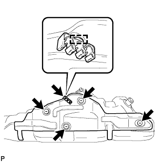 |
Install the heat insulator with the 4 clips.
Install the fuel tube clamp to the heat insulator.
| 2. INSTALL FUEL TANK TO FILLER PIPE HOSE |
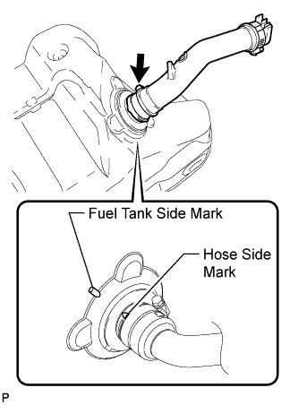 |
Install the hose to the fuel tank as shown in the illustration.
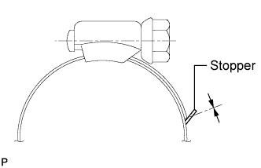 |
| 3. INSTALL FUEL SUCTION WITH PUMP AND GAUGE TUBE ASSEMBLY |
Apply a light coat of gasoline or grease to a new gasket, and install it to the fuel tank.
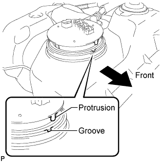 |
Install the fuel suction with pump and gauge tube into the fuel tank.
Put the retainer on the fuel tank. While holding the fuel suction with pump and gauge tube, tighten the retainer one complete turn by hand.
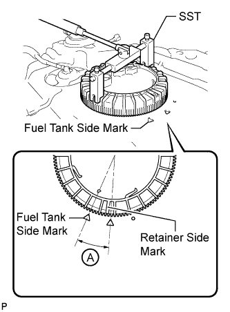 |
Using SST, tighten the retainer until the mark on the retainer is within range A on the fuel tank, as shown in the illustration.
| 4. INSTALL FUEL TANK MAIN TUBE SUB-ASSEMBLY AND FUEL TANK RETURN TUBE SUB-ASSEMBLY (for Single Tank Type) |
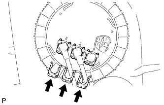 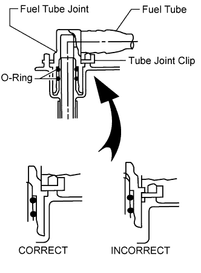 |
Install the 2 fuel tank tubes and No. 1 fuel tube joint with the 3 tube joint clips.
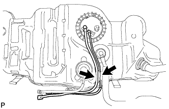 |
Install the 2 fuel tank tubes to the fuel tank.
| 5. INSTALL FUEL TANK MAIN TUBE, FUEL TANK RETURN TUBE AND NO. 2 FUEL TANK MAIN TUBE SUB-ASSEMBLY (for Double Tank Type) |
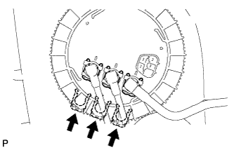 |
Install the 3 fuel tank tubes with the 3 tube joint clips.
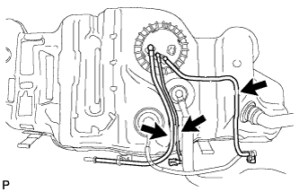 |
Install the 3 fuel tank tubes to the fuel tank.
| 6. INSTALL FUEL TANK SUB-ASSEMBLY |
Set the fuel tank on a transmission jack and raise the fuel tank.
Raise the transmission jack.
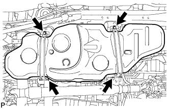 |
Install the 2 fuel tank bands with the 2 pins and 2 clips.
Connect the 2 fuel tank bands with the 2 bolts.
| 7. CONNECT FUEL TANK TO FILLER PIPE HOSE (for Single Tank Type) |
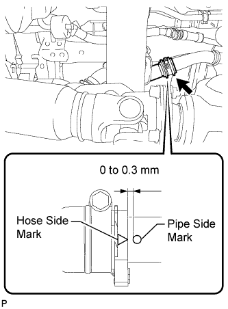 |
Connect the hose to the filler pipe as shown in the illustration.
| 8. CONNECT FUEL TANK TO FILLER PIPE HOSE (for Double Tank Type) |
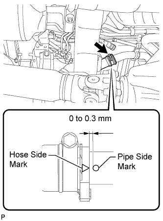 |
Connect the hose to the filler pipe as shown in the illustration.
| 9. CONNECT FUEL TANK BREATHER TUBE (for Single Tank Type) |
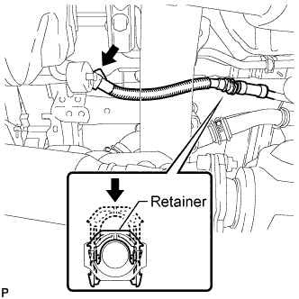 |
Connect the fuel tank breather tube to the filler pipe and push the retainer.
Attach the fuel tube clamp.
| 10. CONNECT FUEL TANK BREATHER TUBE (for Double Tank Type) |
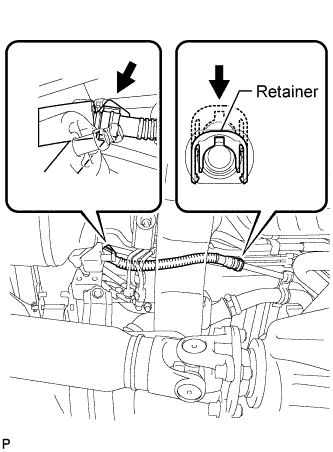 |
Connect the fuel tank breather tube to the filler pipe and push the retainer.
Attach the fuel tube clamp.
| 11. CONNECT NO. 2 FUEL MAIN TUBE SUB-ASSEMBLY (for Double Tank Type) |
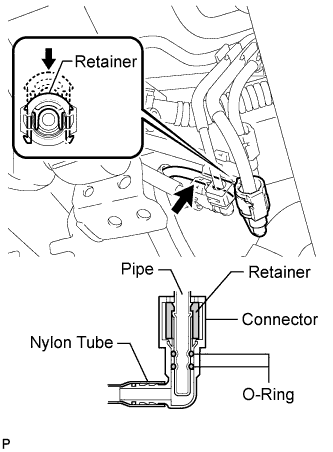 |
Connect the fuel main tube and push the retainer.
Attach the fuel tube clamp.
| 12. CONNECT NO. 2 FUEL TANK BREATHER TUBE (for Double Tank Type) |
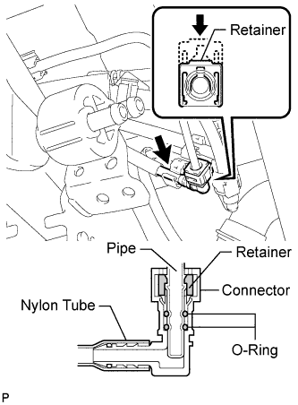 |
Connect the fuel tank breather tube and push the retainer.
Attach the fuel tube clamp.
| 13. CONNECT FUEL TANK RETURN TUBE (for Single Tank Type) |
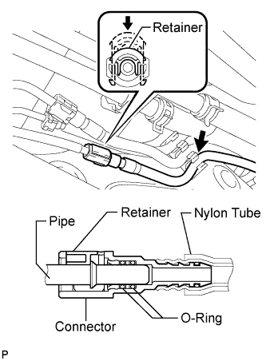 |
Connect the fuel tank return tube and push the retainer.
Attach the fuel tube clamp.
| 14. CONNECT FUEL TANK RETURN TUBE (for Double Tank Type) |
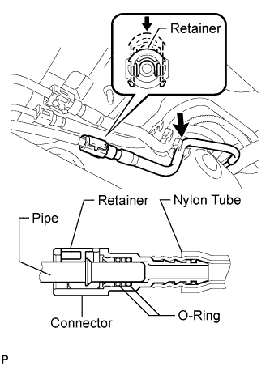 |
Connect the fuel tank return tube and push the retainer.
Attach the fuel tube clamp.
| 15. CONNECT NO. 2 FUEL TANK BREATHER TUBE (for Single Tank Type) |
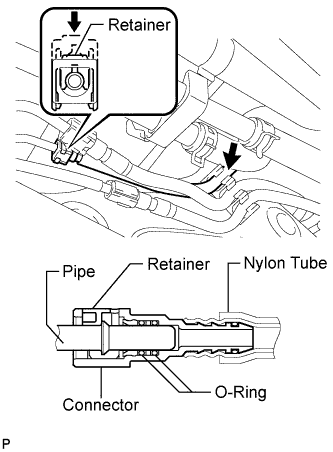 |
Connect the fuel tank breather tube and push the retainer.
Attach the fuel tube clamp.
| 16. CONNECT FUEL TANK MAIN TUBE SUB-ASSEMBLY (for Single Tank Type) |
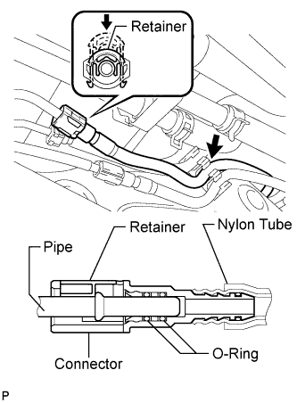 |
Connect the fuel tank main tube and push the retainer.
Attach the fuel tube clamp.
| 17. CONNECT FUEL TANK MAIN TUBE SUB-ASSEMBLY (for Double Tank Type) |
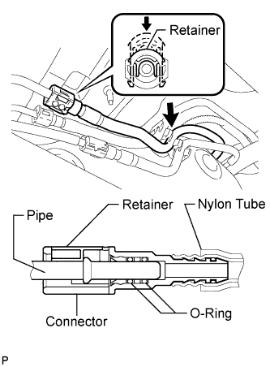 |
Connect the fuel tank main tube and push the retainer.
Attach the fuel tube clamp.
| 18. INSTALL NO. 1 FUEL TANK PROTECTOR SUB-ASSEMBLY |
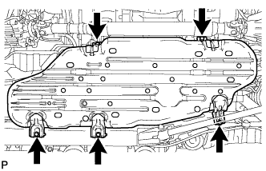 |
Install the tank protector with the 5 bolts.
| 19. INSTALL FUEL TANK CAP ASSEMBLY |
| 20. INSTALL REAR FLOOR NO. 2 SERVICE HOLE COVER |
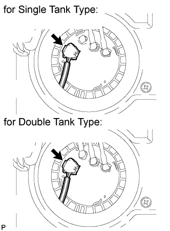 |
Connect the fuel pump and fuel sender gauge connector.
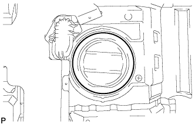 |
Install the service hole cover with new butyl tape.
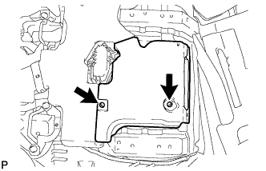 |
w/ Rear Air Conditioning System:
Install the air duct and 2 screws.
| 21. INSTALL FRONT FLOOR CARPET ASSEMBLY |
| 22. INSTALL REAR AIR DUCT GUIDE (w/ Rear Air Conditioning System) |
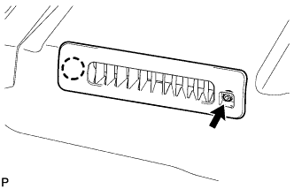 |
Attach the claw to install the guide.
Install the screw.
| 23. INSTALL AIR DUCT PLUG (w/ Rear Air Conditioning System) |
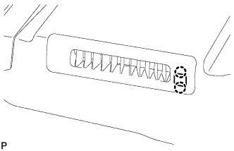 |
Attach the 2 claws to install the plug.
| 24. INSTALL FRONT QUARTER TRIM PANEL ASSEMBLY LH |
w/ Sliding Roof:
Install the front quarter trim panel assembly LH (Click here).
w/o Sliding Roof:
Install the front quarter trim panel assembly LH (Click here).
| 25. INSTALL FRONT QUARTER TRIM PANEL ASSEMBLY RH |
w/ Sliding Roof:
Install the front quarter trim panel assembly RH (Click here).
w/o Sliding Roof:
Install the front quarter trim panel assembly RH (Click here).
| 26. INSTALL REAR SEAT COVER CAP (w/ Rear No. 2 Seat, except Face to Face Seat Type) |
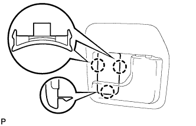 |
Attach the 3 claws to install the rear seat cover cap.
| 27. INSTALL REAR FLOOR MAT REAR SUPPORT PLATE |
 |
Attach the 6 clips to install the support plate.
| 28. INSTALL REAR DOOR SCUFF PLATE LH |
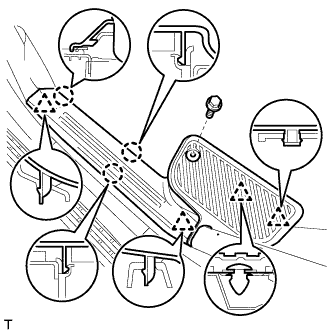 |
Attach the 3 claws and 4 clips to install the scuff plate.
Install the screw.
| 29. INSTALL REAR DOOR SCUFF PLATE RH |
| 30. INSTALL REAR STEP COVER |
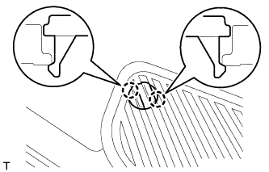 |
Attach the 2 claws to install the step cover.
| 31. INSTALL REAR NO. 2 SEAT PROTECTOR |
 |
Attach the 10 claws to install the 2 seat protectors.
| 32. INSTALL REAR NO. 1 SEAT PROTECTOR |
 |
Attach the 10 claws to install the 2 seat protectors.
| 33. INSTALL REAR NO. 2 SEAT ASSEMBLY |
for Face to Face Seat Type:
Install the rear No. 2 seat assembly (Click here).
except Face to Face Seat Type:
Install the rear No. 2 seat assembly (Click here).
| 34. INSTALL REAR NO. 1 SEAT ASSEMBLY RH (for 60/40 Split Seat Type 40 Side) |
Install the rear No. 1 seat assembly RH (Click here).
| 35. INSTALL REAR NO. 1 SEAT ASSEMBLY LH (for 60/40 Split Seat Type 60 Side) |
Install the rear No. 1 seat assembly LH (Click here).
| 36. CONNECT CABLE TO NEGATIVE BATTERY TERMINAL |
| 37. CHECK SRS WARNING LIGHT |
Check the SRS warning light (Click here).
| 38. ADD FUEL |
| 39. INSPECT FOR FUEL LEAK |
Connect the intelligent tester to the DLC3.
Turn the engine switch on (IG) and intelligent tester ON.
Enter the following menus: Powertrain / Engine and ECT / Active Test / Activate the Fuel Pump Speed Control.
Check that there are no fuel leaks after doing maintenance anywhere on the fuel system.